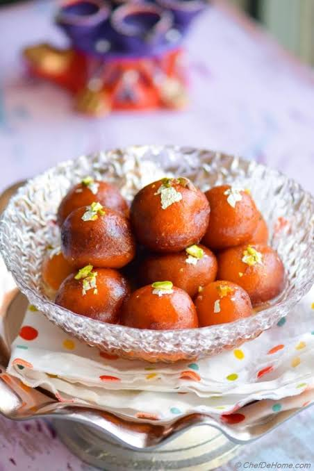

Famous Indian Foods
Introduction
Indian cuisine is famous for its rich flavors, spices, and variety.
Different states have their own special dishes, making India one of
the most diverse food cultures in the world.
Top 5 Famous Indian Foods
- Aloo paratha
- samosa
- Masala Dosa
- Chole Bhature
- Gulab Jamun
Food Categories
- North Indian
- South Indian
- Street Food
- Desserts
Special Food Description
- aloo paratha
- A whole wheat flatbread filled with a savory mixture of boiled potatoes, green chilies, and warm spices.
- Masala Dosa
- A thin, crispy fermented rice and lentil crepe from South India. It is typically filled with a spiced potato mash.
- Gulab Jamun
- A soft milk-based sweet served in sugar syrup.
Food Images



Home |
Places |
Gallery |
Contact